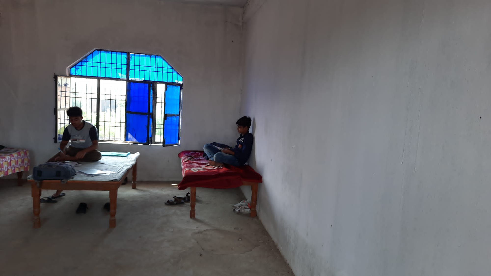

About Blue Ink Trust
We are steadfast in our conviction that every child, irrespective of background or circumstance, deserves the opportunity to thrive. Blue Ink Trust is a community-centred charitable organisation dedicated to advancing equitable access to education and cultivating meaningful opportunities for children and young people facing systemic disadvantages.
Contact details
- Email: info@blueinktrust.org
- Mobile / WhatsApp: 07817 237765
Write to us
Blue Ink Trust
46 Yarnfield Rd
Tyseley
Birmingham B11 3PG
Donation Information
You can support our work through bank transfer or online donation.
Bank Transfer Details
Account Name: Blue Ink Trust
Sort Code: 30-00-03
Account Number: 00459710
Reference: Your name + project

A dedicated school bus helps children reach school safely and consistently—especially those who travel long distances or face unsafe routes. Reliable transport improves attendance, punctuality, and overall learning outcomes.
By adding two additional buses, we aim to reach more villages and help many more children access education. A 53-seater bus costs £33,000.
How you can support
- £625 – Helps sponsor a seat towards a school bus
How to donate
1. Bank transfer
Account Name: Blue Ink Trust
Sort Code: 30-00-03
Account Number: 00459710
Reference: Your name – School Bus
2. Donate via JustGiving
Donate via JustGiving
Reference: School Bus
Receipts and donation updates
If you would like a receipt or wish to receive updates about your donation, please send your payment reference and amount:
- Email: info@blueinktrust.org
- WhatsApp / Mobile: 07817 237765


For just £300 per year, you can help provide an uninterrupted, high-quality education for a student—supported academically, emotionally, and practically from the moment they join us and even after they leave.
Our boarding facility is designed to support students from different districts and states, giving them the opportunity to learn, grow, and become a beacon of hope for their families and communities.
What £300 covers
- Accommodation and living expenses
- Nutritious daily meals
- Clothing and basic necessities
- Tuition fees
- School supplies and learning materials
- Travel to and from the child’s village
How to donate
1. Bank transfer
Account Name: Blue Ink Trust
Sort Code: 30-00-03
Account Number: 00459710
Reference: Your name – Boarding Student
2. Donate via JustGiving
Donate via JustGiving
Reference: Boarding Student
Receipts and donation updates
If you would like a receipt or wish to receive updates about your donation, please send your payment reference and amount:
- Email: info@blueinktrust.org
- WhatsApp / Mobile: 07817 237765
The school is located in a highly deprived area where many families struggle to afford basic necessities, let alone thinking of sending their children to school. We urge you to join hands in breaking down the barriers to education.
With £125 per year, one student can receive
- School uniform
- Travel to and from their village via the school bus
- Tuition fees covered (teacher salary and essential costs such as electricity)
- School supplies (bag, pencil case, pens, textbooks, exercise books)
- Lunch provided at school
How to donate
1. Bank transfer
Account Name: Blue Ink Trust
Sort Code: 30-00-03
Account Number: 00459710
Reference: Your name – Student’s Education
2. Donate via JustGiving
Donate via JustGiving
Reference: Student’s Education
Receipts and donation updates
If you would like a receipt or wish to receive updates about your donation, please send your payment reference and amount:
- Email: info@blueinktrust.org
- WhatsApp / Mobile: 07817 237765